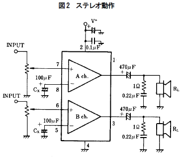

OpAmps catalog
LM386 : sound (the classic, mono)
 Used in [[Smokey amp vIII]] and [[Smokey amp vV]]. The all time classic, easy to work with, good perf, need a few components around to work but nothing crazy. 300 mW only.
Used in [[Smokey amp vIII]] and [[Smokey amp vV]]. The all time classic, easy to work with, good perf, need a few components around to work but nothing crazy. 300 mW only.
- Things to know to make it sound :
- The amplification can be controlled by the usual pot on the input or by a pot and a cap between pin 1 and 8 (bias ?)
- The **current best circuit** [[http://www.runoffgroove.com/ruby.html]] (see that [[https://hackaday.com/2016/12/07/you-can-have-my-lm386s-when-you-pry-them-from-my-cold-dead-hands/|excellent Hackaday article]])
- The my former best sample circuit, with LM386 http://hackaweek.com/hacks/?p=131
- Another one with a nice detailed explanation of low/high pass filter http://makezine.com/projects/bass-bump-headphone-amp/
- Buy here 秋月電子 National LM386 (2 for 100 ¥) http://akizukidenshi.com/catalog/g/gI-01295/
HT82V739 : sound (nice and easy with few surrounding components, mono)
Used in Clapclap 2313. One of my favorite if not my favorite! Small, easy to use, need very few surrounding components (2 caps) and drive up to 1.2 W. A very good boy from Holtek, that is also very cheap.
Beware : this ones are rated 2.2-5.5V, unlike the other opamps that work in the 4v-15v range ! You have to take that in account.
NJM2073D : sound (2 channels in a 8pin chip, good for stereo)
 Used in Around a SNES. A bit noisy one at high volume, I drive 2 x 4ohm speaker, but perfect for and arcade cabinet at reasonable volume.
- Things to know to make it sound :
- Connect Signal(-) to GND (normal or crazy? I'd like to know but without it it doesn't work for me)
- You need a 100-200 uF cap between the (-) pin of the opamp and the Signal(-)/GND (otherwise there is NO sound or ugly scratches only)
- The serial 470 uF cap on the output side is for better bass response (and not mandatory)
- Deal with the volume at the input level with a potentiometer (left = Signal(%20), middle = (%20) opamp, right = GND/Signal(-))
- Buy here 秋月電子 http://akizukidenshi.com/catalog/g/gI-03594/
LM358 : generic use
todo
Shopping
Links